HX Insight · Mobile app
An iOS 26 app for what employees do between meetings: clock in, fix a missed punch, ask for leave, approve from a notification and get through the first week. Liquid Glass for the controls, HX Insight for the content.

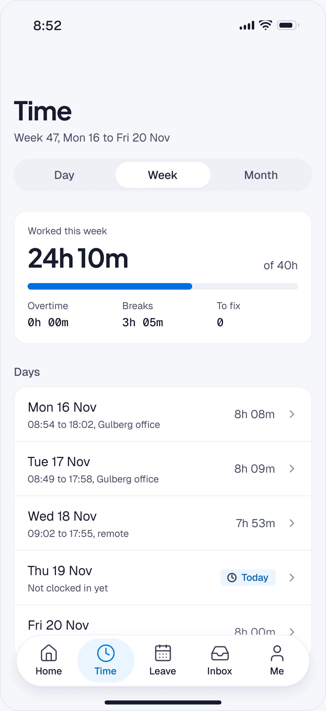


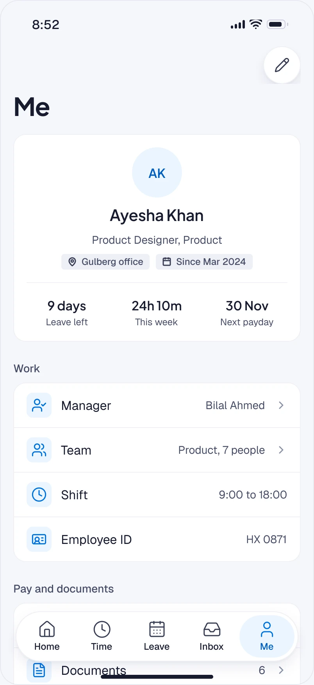
Four jobs, each start to finish
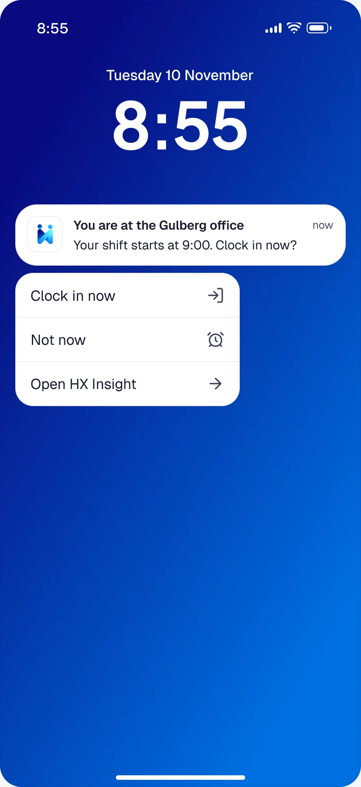
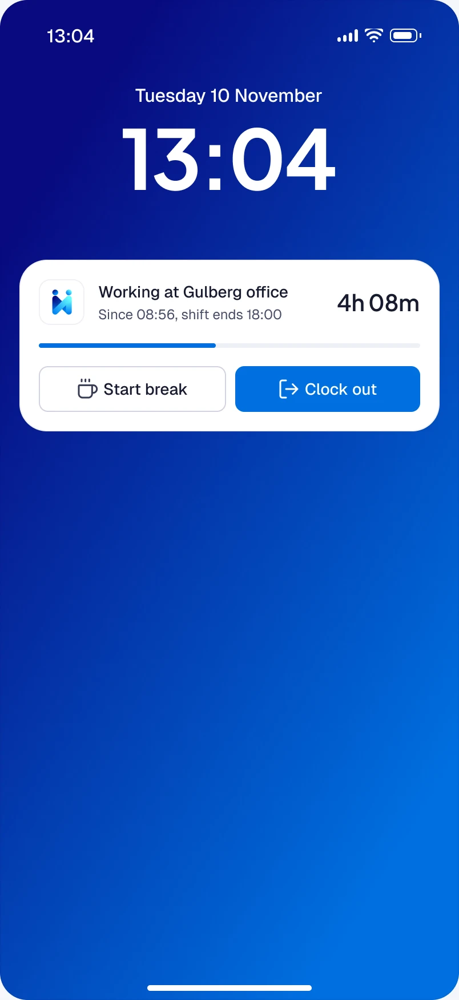
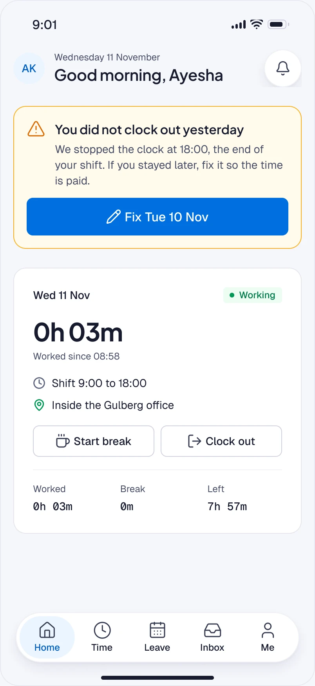
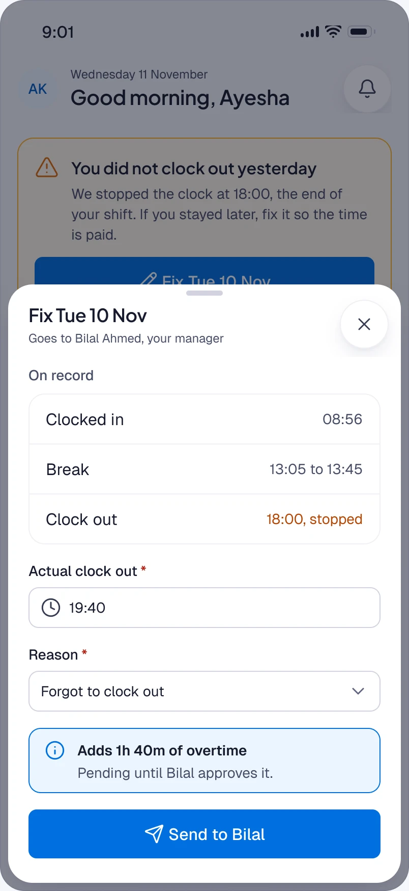
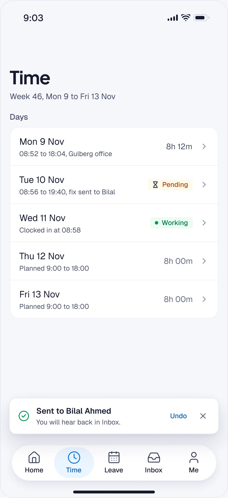
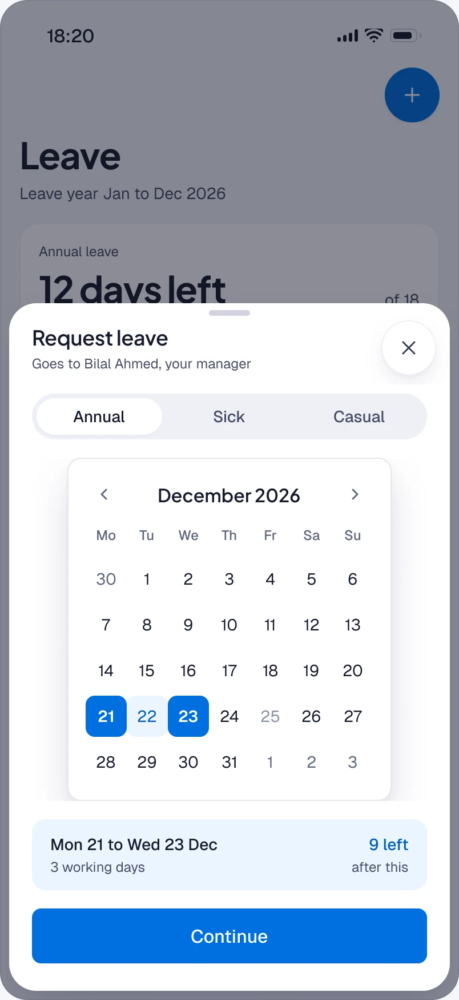
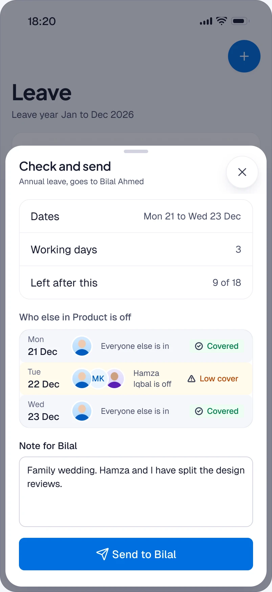
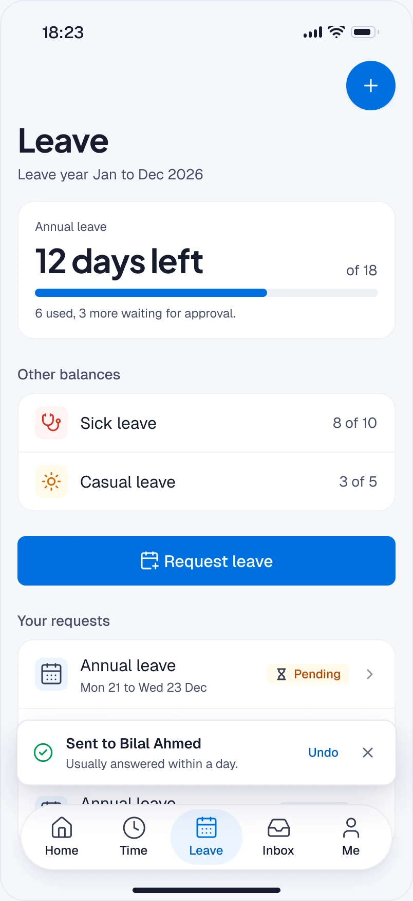
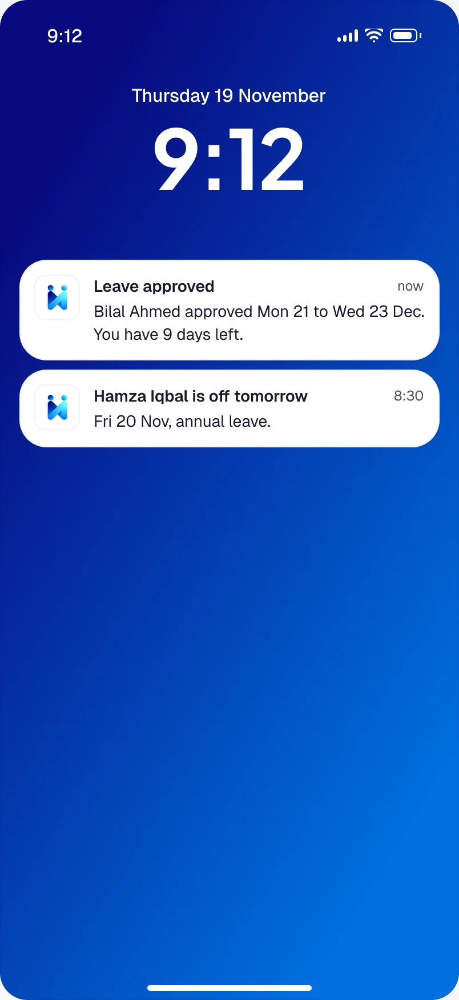
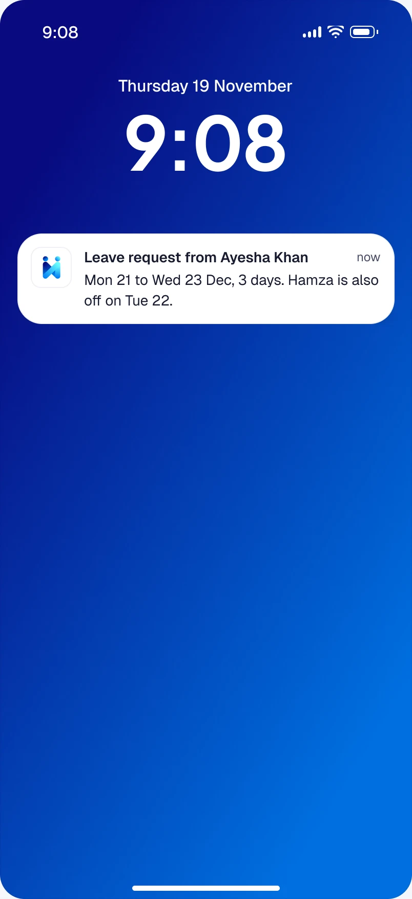
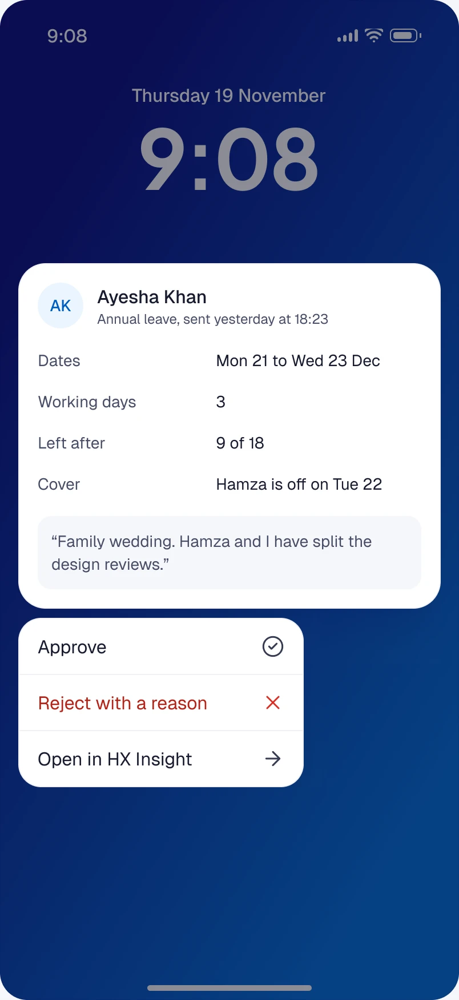
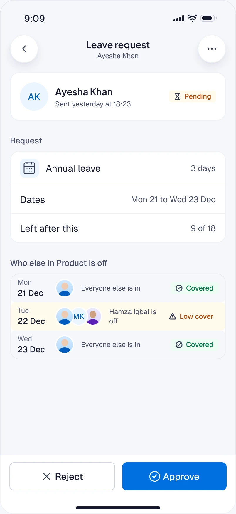
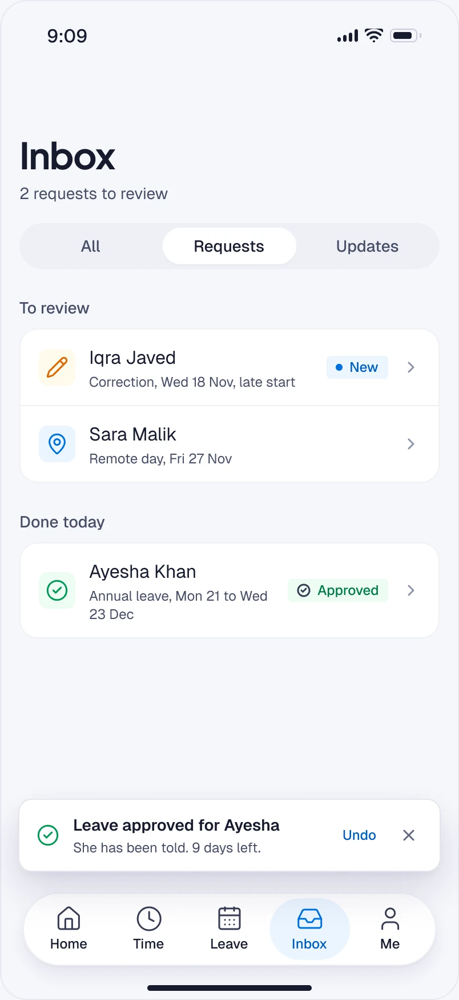
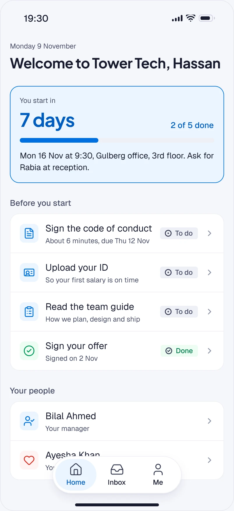
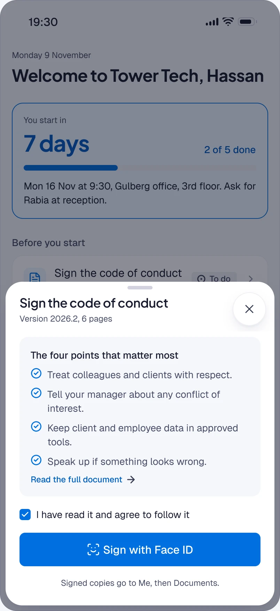
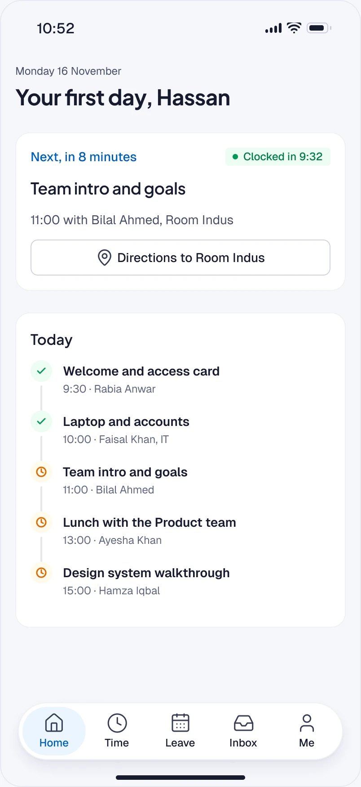
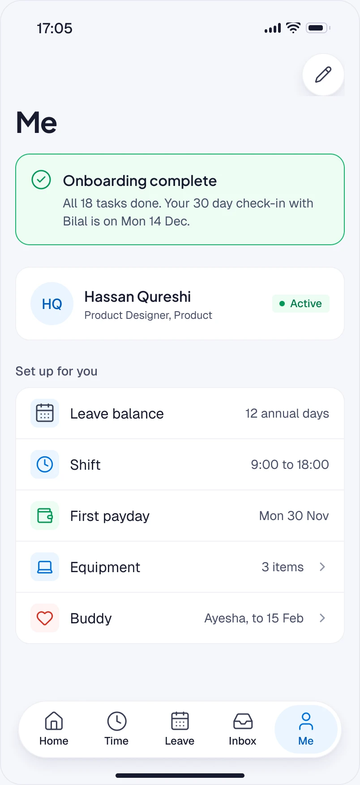
01 Clock in. Lock screen prompt, Live Activity, a missed punch flagged, fixed in a sheet and sent as pending.
02 Apply for leave. A sheet over the balance, working days counted, who else in Product is off, then sent and shown as pending.
03 Approve. The request on Bilal’s lock screen, decided from the notification or opened in full, then done with a way to undo.
04 First week. A countdown to day one, a task signed with Face ID, a first morning of people, and a profile that is ready.